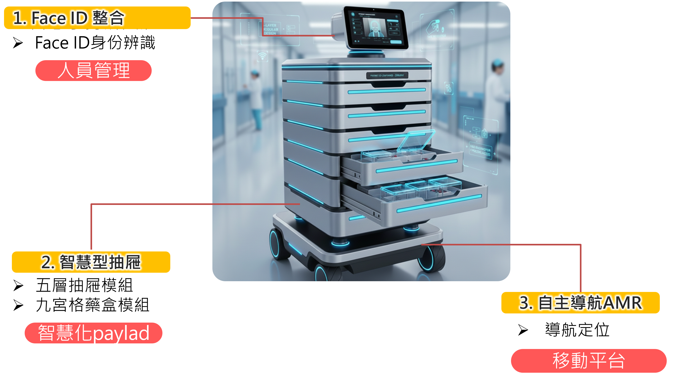
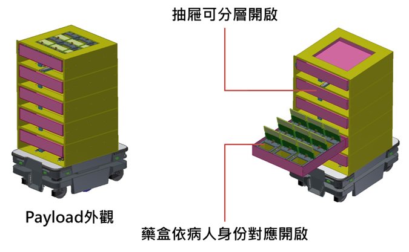

（一）業者面臨問題與需求
1、面臨問題
長照與醫療場域人力負擔日益加重，照護流程中仍存在大量仰賴人工操作與經驗判斷之環節，致使效率與作業正確性難以兼顧。主要問題如下：
| 問題 | 現況 | 影響 |
|---|---|---|
| 人員管理不易 | 出勤打卡與工時紀錄採刷卡、指紋或人工登錄，人員須另行前往指定設備操作 | 易受設備接觸限制與代刷行為影響，出勤資料正確性不足，且打卡動作中斷照護作業 |
| 硬體功能與擴充彈性不足 | 現有設備多以單一功能設計，缺乏自動化控制與模組化架構 | 場域需求改變或新增功能時須重新配置設備，系統整合與後續擴充成本偏高 |
| 用藥流程風險 | 已導入 AMR 協助物資移動，惟藥品存取仍仰賴人工辨識與操作 | 缺乏身分驗證與存取控管機制，存在誤取藥品與流程中斷風險，且事後難以還原操作過程 |
2、業者需求
- 導入非接觸式人員識別機制，提升出勤管理與操作紀錄之準確性。
- 以模組化硬體設計，開發具自動控制與功能擴充能力之智慧型抽屜系統，提升設備彈性與應用擴展能力。
- 建立具身分辨識與存取控管功能之藥品管理流程，降低用藥錯誤風險並強化照護安全。
- 使 AMR 由單純移動平台升級為具管理功能之自主導航智慧藥櫃，提升設備競爭力。
（二）解決方案
本案以 AMR 為載體，整合「人員管理」與「智慧給藥」兩大功能模組，應用於醫院及長照機構之護理站與病房照護情境。
相較前版，本版刪除下列內容：C 非接觸量測系統（rPPG 生命體徵量測）分項、手勢辨識機制、語音擷取與記錄機制。情境流程、計畫架構、智慧化層次表、AI 技術項目與查核表均同步調整。
刪除後之效果：本案不再包含以鏡頭量測血壓、血氧之功能宣稱，可避免衍生醫療器材認定爭議；移除語音擷取後，亦不涉及病患及同室他人談話之錄音爭議。計畫範圍集中於人臉辨識驅動之存取控管此一核心命題，於十六週期程內具可執行性。
出勤狀態之輸入改由設備觸控面板選定，身分則由人臉辨識確認；追溯功能改以結構化存取事件紀錄承擔，不依賴語音內容。
1、系統情境說明
自主導航智慧藥櫃平時停靠於護理站附近待命。護理人員於日常工作動線上，透過人臉辨識完成身分確認，並於觸控面板選定上班、下班或休息等狀態，系統即時記錄工作狀態。
需執行藥品配送或給藥作業時，AMR 搭載智慧型抽屜 payload 自主導航前往指定病房。抵達後由系統以人臉辨識確認病患身分，確認通過後自動開啟對應病患之藥盒上蓋；取放完成後藥盒自動關閉，上位系統記錄本次存取事件，內容包含操作人員、病患對象、辨識信心值、藥盒格位、開啟與關閉時間，以及是否經人工確認。
透過上述流程，原本依賴人工操作與口頭確認之給藥作業，升級為具「身分辨識」、「存取控管」與「事件紀錄」之照護輔助系統，降低人為操作錯誤，並建立可追溯之照護紀錄。

本系統之身分辨識與存取紀錄，定位為輔助核對與過程留存，不取代護理人員既有之臨床核對程序。
本項須於計畫說明與教育訓練文件中明確界定，避免場域端誤解系統可替代臨床核對責任；操作介面亦不呈現「核對完成」等易生誤解之用語。
2、A1 人員身分辨識與出勤紀錄開發
| 原有 | 出勤打卡與工時紀錄依賴識別卡、指紋或人工操作，人員須特地前往指定設備位置打卡，易中斷照護作業，且常發生代刷、誤刷或遺漏登錄，導致出勤與實際工作狀態難以即時掌握，資料可追溯性不足。 |
| 新增 | 導入人臉辨識人員身分確認機制，並將設備待機位置設置於護理站旁，使人員於日常工作動線即可完成操作。系統先行人臉辨識確認身分，辨識成功後於觸控面板選定上班、下班、休息開始或休息結束等狀態，兩者合併為一次操作並自動寫入出勤紀錄。系統並參考國際醫護人員工時管理概念（如約每四小時安排休息），協助機構掌握人員工作節奏。 |
| 差異 | 由接觸式刷卡改為非接觸辨識，且身分由生物特徵確認而非卡片持有，可消除代刷情形；打卡位置移至日常動線上，不再中斷照護作業。系統自動記錄並回溯至實際人員，提升人資、排班與稽核之資料正確性。出勤紀錄正確率預期提升至 95% 以上。 |
說明：現況出勤紀錄正確率之基線值須於計畫初期實地量測取得，不採推估值，以確保提升幅度可被驗證。
3、B1 智慧型抽屜（payload）開發
| 原有 | 現行 AMR 多僅作為藥品運送平台，藥品仍需由護理人員自行開啟抽屜、尋找藥盒並核對病人身分，流程冗長且高度依賴人工作業，易因誤取、錯放或病人辨識錯誤而增加用藥風險與護理負擔。 |
| 新增 | 開發智慧型抽屜 payload，採五層式模組抽屜結構，每層可由上位系統獨立控制開啟與關閉，抽屜內配置可更換之功能模組。預設配置下每層內建 9 宮格藥盒模組，各藥盒具獨立上蓋致動機構。AMR 抵達病床或指定位置後進行病患身分確認，通過後自動開啟對應藥盒上蓋，完成取放後立即關閉，上位系統同步記錄存取事件。 |
| 差異 | AMR 由單純移動平台升級為具身分辨識、精準存取與可擴充能力之自主導航智慧藥櫃。藥盒開啟精準對應至個別病患，降低誤取與錯用風險，並減少人員逐一尋找與開啟之操作步驟。單次藥品存取時間預期由 20–30 秒縮短至 10 秒以內。 |
說明：單次存取時間之量測邊界須先行定義（建議自身分辨識啟動起算至藥盒關閉止，不含 AMR 移動時間），並以同一批人員於導入前後比對，以排除熟練度差異。

4、B2 病患身分辨識與存取紀錄開發
| 原有 | 給藥流程多由護理人員人工核對病患身分並開啟藥盒，過程主要依賴口頭確認與人工紀錄，缺乏完整數位化記錄機制。發生給藥爭議或流程問題時，難以追溯實際操作過程與確認責任歸屬。 |
| 新增 | 建置病患臉部特徵資料庫並開發人臉辨識演算法，於確認病患身分後透過通訊協定（如 MQTT）發送控制指令開啟對應藥盒。同時建立結構化存取事件紀錄，欄位包含操作人員、病患對象、辨識信心值、藥盒格位、開啟與關閉時間、是否經人工確認，並提供依人員、病患或期間之查詢功能。 |
| 差異 | 由人工辨識與紙本紀錄，改為身分辨識結果與存取事件之連動留存，使每次給藥操作均可回溯至實際人員、對象與格位，提升用藥流程透明度與機構管理可靠性。紀錄以結構化欄位為主，可直接支援查詢與統計，無須事後轉譯。 |
病患與人員之臉部特徵資料屬個人生物特徵資料。本案須於計畫初期完成下列項目：取得場域單位之使用同意與告知程序、界定資料保存期限與存取權限、特徵資料以不可還原之特徵向量形式儲存而不保留原始影像。
本項屬導入前提，須列為第一個查核點之前置作業。
5、B3 系統整合測試
| 原有 | payload 開發完成後，若缺乏系統層級之整合與驗證，易於實際場域出現辨識錯誤、控制邏輯不一致或流程中斷等問題，影響設備穩定度與導入成熟度。 |
| 新增 | 規劃系統整合測試與功能驗證，涵蓋 A1 人員身分辨識、B1 智慧型抽屜 payload 與 B2 病患身分辨識及存取紀錄，針對抽屜與藥盒開啟邏輯、身分辨識指令傳遞、存取紀錄正確性、辨識失敗時之人工備援流程，以及實際照護流程運作完整性等項目進行系統化測試。 |
| 差異 | 由單一模組測試提升為系統化整合測試，可於開發階段即提前發現跨模組介接與流程協調問題，並彙整測試結果作為後續優化依據，確保交付設備具備可實際導入之穩定性。 |
（三）計畫架構及執行方式
1、計畫架構
本案分為兩大分項、四個子項。
| 分項 | 子項 | 主要交付 |
|---|---|---|
| A 智慧辨識模組設計 | A1 人員身分辨識與出勤紀錄開發 | 可實際操作之軟體一套 |
| B 智慧型 payload 設計 | B1 智慧型抽屜開發 | 機構設計圖一份、payload 原型硬體一組 |
| B2 病患身分辨識與存取紀錄開發 | 可實際操作之軟體一套 | |
| B3 系統整合測試 | 系統整合測試報告一份 |
2、智慧化應用與性能提升輔導
本案導入之智慧化應用服務模組與其智慧化層次對應如下。
| 模組 | L2 可視化 | L3 透明化 | L4 可預測 | L5 自適化 |
|---|---|---|---|---|
| A1 人員身分辨識與出勤紀錄 | 透過人臉辨識即時顯示辨識人員身分與出勤狀態，將原本隱性之出勤行為轉為可即時掌握之系統資訊。 | 出勤紀錄結合人臉身分驗證結果，確保每筆資料可回溯至實際人員，消除代刷與誤刷情形。 | 累積人員出勤與操作行為資料後，可作為人力排班與工作負載分析之基礎，支援後續智慧化管理應用。 | 無 |
| B1 智慧型抽屜 payload | 藥品配送流程中即時顯示抽屜與藥盒開啟狀態，使人員清楚掌握藥品存取流程。 | 抽屜與藥盒開啟行為皆與病患身分辨識結果連動，確保每次存取皆有明確對應關係，降低人為錯誤。 | 透過模組化 payload 設計與系統記錄，可分析不同場域之用藥與配送模式，作為功能擴充與流程優化依據。 | 無 |
| B2 病患身分辨識與存取紀錄 | 即時顯示病患身分辨識結果與藥盒存取狀態，將給藥過程由人工隱性流程轉為可視化系統資訊。 | 每次給藥行為皆留存身分辨識結果與存取事件欄位，形成可追溯資料鏈，明確對應人員、對象、格位與時間。 | 累積存取紀錄後，可分析異常存取頻率、重複開啟行為或給藥延遲情形，作為風險預警之優化依據。 | 無 |
| B3 系統整合測試 | 將各模組測試結果以系統化方式呈現，確保整體運作狀態可被檢視。 | 透過整合測試確認身分辨識、存取紀錄與抽屜控制間之資料與指令流一致性，降低系統整合風險。 | 無 | 無 |
3、AI 技術應用與導入
本案以人臉辨識為單一核心 AI 技術，應用於兩個對象，兩者之任務型態與指標要求不同：
| 應用對象 | 任務型態 | 使用情境 | 指標重點 |
|---|---|---|---|
| 操作人員 | 一對多識別（護理站登錄人員） | 站立、正面、光線穩定、可配合鏡頭 | 以出勤紀錄正確率為主；誤認之後果為紀錄錯誤，可事後更正 |
| 病患 | 一對一驗證（系統已知應為何人） | 臥床、光線不足、可能配戴口罩或管路、可能睡眠中 | 以誤認率為主；誤認之後果為開啟他人藥盒，須嚴格管控並具人工備援 |
兩者雖共用辨識演算法，惟註冊流程、影像條件與門檻設定須分別設計。病患辨識屬一對一驗證，可設定明顯較嚴之誤認門檻，並以提高誤拒率換取安全性——誤拒僅需人員手動確認，代價遠低於誤認。
4、執行風險與因應措施
| 風險項目 | 成因 | 因應措施 |
|---|---|---|
| 身分辨識指標定義不足 | 以「正確率」單一數值表達，未區分誤認與誤拒 | 指標改以誤認率與誤拒率分列；病患辨識之誤認門檻明顯嚴於誤拒門檻；低信心結果一律轉人工確認，不自動開盒 |
| 病房環境之人臉辨識條件不利 | 病患臥床、光線不足、配戴口罩或管路、睡眠中或意識不清、外觀改變 | 建立備援辨識路徑（如手圈條碼或人員代為確認），列為必要功能而非選配；註冊影像須涵蓋臥姿與實際照明條件；辨識失敗率納入整合測試統計項目 |
| 致動器交期為關鍵路徑 | 五層各 9 格共 45 組上蓋致動機構，另加 5 組抽屜致動，數量大且十六週期程無緩衝 | 長料件與致動器須於 CP1-1 前完成選型與下單；設計階段先以單層試作驗證致動可靠度，再行全機投產 |
| 致動器數量偏多影響可靠度與成本 | 50 組致動機構之線束複雜度、耗電與故障點 | 原型階段評估致動器壽命與耗電；預留「以層級控制搭配格位指示」之簡化配置選項，作為量產成本與可靠度之替代方案 |
| payload 重心與 AMR 介面 | payload 尺寸達 60×60×110 cm，抽屜開啟時重心外移 | 設計階段即確認 AMR 承載、重心與電氣介面規格；抽屜開啟狀態下限制 AMR 移動 |
| 臉部特徵資料之個資處理 | 臉部特徵屬個人生物特徵資料 | 依（二）之 4 所列原則辦理，同意程序列為 CP1-1 前置作業 |
| 臨床端對系統定位之誤解 | 可能誤認系統可取代臨床核對程序 | 於教育訓練與 SOP 文件中明確界定系統為輔助核對與紀錄工具 |
| 效益基線未取得 | 出勤正確率與存取時間之現況值未實測 | 計畫啟動後第一週即展開基線量測，列為 CP1-1 查核內容 |
（四）查核工作項目及執行進度
本案期程為十六週，自計畫核定後起算，週次為相對週。含六項工作項目、七個查核點，各工作項目設 1 至 2 個查核點。
關鍵路徑為 WP2 抽屜 payload：機構設計（W2–W5）與原型製作（W5–W8）之間無緩衝，且致動器交期直接影響原型完成時點，須於 W3 前完成下單。W8 為期中查核，累計進度須達 60%。
| 查核點 | 工作項目 | 完成週次 | 查核內容與量化指標 | 累計進度 |
|---|---|---|---|---|
| CP1-1 | WP1 系統規格與介面定義 | W3 | 系統規格書一份，含 AMR 承載與電氣介面規格、藥盒格位編碼、存取事件資料欄位、辨識門檻定義。完成效益基線量測（出勤紀錄正確率、單次藥品存取時間）。完成臉部特徵資料使用同意程序。長料件與致動器完成選型下單。 | 15% |
| CP2-1 | WP2 智慧型抽屜 payload | W5 | 抽屜結構設計圖一份。規格：payload 整體最大尺寸 60×60×110 cm；最大單格藥盒尺寸 11×11×10 cm；單層抽屜可儲存 9 格藥盒。單層試作件完成致動可靠度初驗。 | 30% |
| CP3-1 | WP3 人員身分辨識與出勤紀錄 | W7 | 可實際操作之軟體一套。規格：人員身分辨識誤認率 ≤ 1%、誤拒率 ≤ 10%；出勤狀態選定與紀錄寫入完整；出勤紀錄正確率 ≥ 95%（人員與狀態均正確）。 | 45% |
| CP2-2 | WP2 智慧型抽屜 payload 併期中進度查核 | W8 | payload 原型硬體一組。規格：具備五層抽屜結構；每層抽屜具自動開合功能；每格藥盒具獨立上蓋且可自動開閉；全格位開啟指令與實際開啟格位比對正確率 100%。併同提出期中進度報告一份，含可供實地查驗之硬體與軟體工作項目佐證資料。 | 60% |
| CP4-1 | WP4 病患身分辨識與存取紀錄 | W12 | 可實際操作之軟體一套。規格：病患身分辨識誤認率 ≤ 0.5%、誤拒率 ≤ 10%；辨識未通過時一律轉人工確認且不自動開盒；存取事件紀錄欄位完整率 ≥ 99.5%，並可依人員、病患與期間查詢。 | 80% |
| CP5-1 | WP5 系統整合測試 | W14 | 系統整合測試報告一份，含下列測試結果：身分辨識指令傳遞、抽屜與藥盒開啟邏輯、存取紀錄正確性、辨識失敗時之人工備援流程、連續作業穩定性。 | 90% |
| CP6-1 | WP6 教育訓練與成果報告 | W16 | 受輔導業者人才教育訓練：實際上課相片、SOP 文件一份、教育訓練簽到表一式。執行成果報告一份，含本計畫相關執行工作之佐證資料。 | 100% |
說明：查核點依工作項目編號，同一工作項目之查核點以連號區分。系統整合測試排序於各模組完成之後，以確保測試對象已具備。辨識規格以誤認率與誤拒率表達，理由詳見（三）之 3 與 4。
（五）預期計畫效益
1、量化效益
| 項目 | 現況 | 計畫目標 | 量測方式 |
|---|---|---|---|
| 出勤紀錄正確率 | 依計畫初期實測基線 | ≥ 95%（人員與狀態均正確） | 與人工比對之抽樣稽核 |
| 單次藥品存取時間 | 20–30 秒 | ≤ 10 秒 | 自身分辨識啟動至藥盒關閉，同批人員導入前後比對 |
| 人員身分辨識誤認率 | 不適用 | ≤ 1% | 註冊人員之交叉比對測試 |
| 病患身分辨識誤認率 | 不適用 | ≤ 0.5% | 刻意構造之錯誤對象比對測試 |
| 藥盒開啟對應正確率 | 不適用 | 100% | 全格位逐一驗證，指令與實際開啟格位比對 |
| 存取事件紀錄完整率 | 依人工登載 | ≥ 99.5% | 整合測試期間之事件比對 |
| 藥盒獨立控制格數 | 不適用 | 45 格（五層 × 九宮格） | 功能驗證 |
2、質化效益
- 提升自主導航智慧藥櫃於醫療與長照場域之實際可用性，使設備由單純移動平台升級為具備身分辨識與存取控管能力之智慧照護輔助系統。
- 透過人臉辨識與智慧抽屜設計，強化人員管理與藥品配送流程之安全性與可靠性，降低人為操作錯誤風險。
- 採用模組化 payload 架構，提升設備後續功能擴充與場域調整之彈性，降低導入與維護成本。
- 建立可回溯之存取紀錄鏈，使給藥爭議或流程異常發生時具備客觀查證依據，提升機構管理可靠性。
- 抽屜 payload 之模組化介面可承載其他功能模組，為受輔導業者後續拓展至耗材配送、檢體運送等應用預留基礎。
- 可安排現場示範觀摩並協助成果展示，供其他業者參考仿效，提升設備市場競爭力。